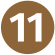

«Les Trois Mousquetons» est l'association d'escalade FSGT du 3ème arrondissement de Paris.
Horaires
Lundi, Mardi et Jeudi de 19h à 22h
Devenir Membre
Les inscriptions pour la saison 2016/2017 sont closes. Pour être tenu au courant des prochaines inscriptions, suivre notre page Facebook.
Nous trouver
Lycée Turgot, 69 Rue de Turbigo, 75003 Paris
- Arts et Métiers 
- République


- Réaumur - Sébastopol